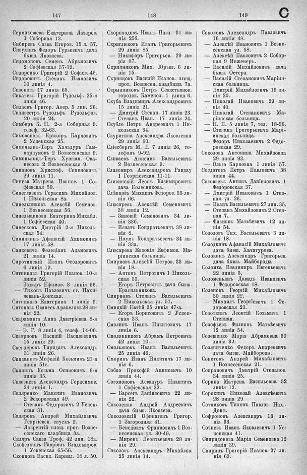

Лист источника 555
Скан

Распознанный текст
147
Сермакешева Екатерина Лазарев.
1 Соборная 12.
Сибиревъ Савва Егоров. 15 л. 57.
Сивухинъ Федоръ Гурьевичъ дача
бывш. Яковлева.
Сидомоновъ Семенъ Абрамовичъ
2 Софіевская 37-19.
Сидоренко Григорій 2 Софіев. 45.
Сидоровичъ Степанъ Ивановичъ
10 линія 4.
Сизоновъ 17 линія 65.
Сикачевъ Григорій Рудольф. 25-я
линія 46.
Силаевъ Григор. Авер. 5 лин. 26.
Силивестръ Рудольфъ Рудольфов.
20 линія 24.
Симберъ К. Н. 2-я Соборная 9.
телеф. 32-63.
Симоновонъ Крикоръ Карповичъ
2 Успенская 25.
Симоньянъ-Теръ Хачадуръ Гам-
парцумовъ 2 Вознесенская 9.
Симоньянцъ-Теръ Хунгиан. Ова-
несовъ 2 Вознесенская 9.
Синановъ Христоф. Семеновичъ
29 линія 11.
Синева Матрена Иванов. 1 Со-
фіевская 50.
Синеглазовъ Герасимъ Михайлов.
1 Никольская 8а.
Синельниковъ Алексѣй Семенов.
1 Вознесенская 56.
Синельщикова Екатерина Михайл.
1 Софіевская 40.
Синесковъ Дмитрій 2-я Николь-
ская 54.
Синичкинъ Афанасій Акимовичъ
17 линія 58.
Синкевичъ Фелеціанъ Адамовичъ
21 линія 14.
Сиротинскій Иванъ Ѳеодоровичъ
6 линія 19.
Ситниковъ Григорій Иванов. 10-я
линія 52.
— Захаръ Ефимов. 3 линія 56.
— Тихонъ Павловичъ ст. Нахи-
чевань-Донская.
Ситникова Екатерина 1 линія 3.
Ситоновъ Ованесъ Аракеловъ 28 ли-
нія 22.
Скараманга Анна Дмитріевна 8-я
линія 10.
— Э. Г. 8 линія 4, телеф. 14-06.
Скворцовъ Василій Васильевичъ
15 линія 29.
Скендеровъ Тиридатъ Александр.
31 линія 26.
Скидановъ Мефодій Козьмичъ 21-я
линія 51г.
Скининъ Козьма Осиповичъ 6-я
линія 35.
Склезневъ Александръ Герасимов.
24 линія 1.
Скляренко Максимъ Ивановичъ
2 Федоровская 49.
— Степанъ Федоровичъ 2 Успен-
ская 31.
Скляровъ Андрей Михайловичъ
Георгіевск. спускъ 2.
— Лаврентій площ. прот. Возне-
сенскаго кладбища 3а.
Скляръ Савва Троф. 42 лин. 18а.
Скобелкинъ Гавріилъ Владимиров.
1 Успенская 65-56.
Скопцовъ Васил. Карпил. 18 л. 50.
148
Скороходовъ Иванъ Павл. 31 ли-
нія 25б.
Скриглюковъ Иванъ Григорьевичъ
29 линія 85.
— Никифоръ Григорьев. 29 ли-
рія 87.
Скрипниковъ Мих. Юрьев. 6 ли-
нія 15.
Скрипцовъ Василій Иванов. площ.
прот. Вознесен. кладбища 7а.
Скрынниковъ Петръ Севястьянов.
городск. Каменол. 1 улица 6.
Скуба Владимиръ Александровичъ
15 линія 21.
— Дмитрій Степан. 17 линія 23.
— Степанъ Иван. 17 линія 24.
Скубло Петръ Андреевичъ 1 Ни-
кольская 34.
Скуритина Александра Яковлевна
29 линія 60.
Сліесбергъ М. Л. 7 линія 26, те-
лефонъ 9-92.
Сливаемъ Анисимъ Васильевичъ
2 Вознесенская 9.
Славомиръ Александровъ Раидау
1 Георгіевская 11-11.
Сливинскій Леонъ Казимировичъ
дача Колесникова.
Слѣпцовъ Михаилъ Федоров. 33 ли-
нія 66.
Слюсаревъ Алексѣй Семеновичъ
38 линія 12.
— Зиновій Семеновичъ 34 ли-
нія 33б.
— Игнатъ Кондратьевичъ 38 ли-
нія 8.
— Наумъ Кондратьевичъ 34 ли-
нія 33а.
Слюсарева Евдокія Евфимов. Ма-
ріинская больница.
Смирновъ Алексѣй Петров. 33 ли-
нія 18.
— Антонъ Петровичъ 1 Николь-
ская 33.
— Егоръ Петровичъ дача бывш.
Красильникова.
Смирновъ Степанъ Васильевичъ
2 Никольская ул. 57.
Смицкій Евтѣй 35 линія 47-а.
— Егоръ Борисовичъ 2 Успен-
ская 33.
Смолинъ Иванъ Никитовичъ 17
линія 6.
Смолянниковъ Абрамъ Петровичъ
42 линія 10.
Смольяновъ Иванъ Васильевичъ
25 линія 43.
Сморинъ Иванъ Никитичъ 17 ли-
нія 6.
Собко Прокофій Акимовичъ 10
линія 44.
Согомоновъ Асвадуръ Никитичъ
1 Софіевская 22.
— Барсегъ Даніиловичъ 22 ли-
нія 22.
Соколенко Андрей Андреевичъ
дача бывш. Яковлева.
Соколовскій Офинагенъ Григор.
1 Загородная 41.
— Бенедиктъ Францовичъ 1 Воз-
несенская ул. 30-49.
— Миронъ Леонтьевичъ 28 ли-
нія 29.
Соколовъ Александръ Михаилов.
25 линія 14.
149
C
Соколовъ Александръ Павловичъ
16 линія 48.
— Алексѣй Ивановичъ 1 Возне-
сенская ул. 58.
— Алексѣй Павловичъ 2 Собор-
ная 9 Инженеръ.
— Василій Михайловичъ дача
бывш. Остера.
— Василій Степановичъ Маріин-
ская больница.
— Дмитрій Михайловичъ 19 ли-
нія 20.
— Николай Ивановичъ 29 ли-
нія 40.
— Николай Степановичъ Ма-
ріинская больница.
— Н. П. 5 линія 7, тел. 18-96.
— Степанъ Григорьевичъ Марі-
инская больница.
— Федоръ Николаевичъ 2 Федо-
ровская 29.
Соколова Антонина Михайловна
29 линія 93.
— Ольга Карповна 1 линія 57.
Солдатовъ Петръ Павловичъ 38
линія 44.
Соловьевъ Антипъ Даніиловичъ 1
Федоровская 37.
— Дмитрій Ивановичъ 1 Степ-
ная ул. 26.
— Иванъ Васильевичъ 27 лин. 35.
— Степанъ Михайловичъ 2 Степ-
ная 7.
— Филиппъ Матвѣевичъ 12 ли-
нія 54.
Солодовъ Тих. Васильевичъ 3 ли-
нія 18.
Солодкинъ Афанасій Михайловичъ
дача бывш. Хачатурова.
Солокинъ Александръ Григорьев.
дача бывш. Майбороды.
Соломка Владимиръ Евгеньевичъ
22 линія 5.
Соломеньянъ Давидъ Ивановичъ
1 Федоровская 18.
Соленовъ Георгій Михайловичъ
30 линія 22.
— Михаилъ Георгіевичъ 1 Фе-
доровская 23.
Солоткинъ Леонтій Козьмичъ 1
Степная.
Солофьевъ Филиппъ Матвѣевичъ
12 линія 54.
Солешенко Марія Абрамовна 30
линія 32.
Соляниченко Федоръ Андреевичъ
дача бывш. Майбороды.
Сонотовъ Андрей Михайловичъ
1 Вознесенская 91.
Сопрановичъ Дмитрій Степанов.
34 линія 25.
Сорина Матрена Васильевна 32
линія 12.
Сорокинъ Николай Алексѣевичъ
28 линія 29.
Сотниковъ Тихонъ Павлов Нах.-
Донъ.
Софроновъ Александръ 13 ли-
нія 33.
Сочневъ Иванъ Яковлевичъ 1 Ус-
пенская 41.
Спиридонова Марія Семеновна 12
линія 39.
Спиринъ Григорій Иванов. 27 ли-
нія 63.